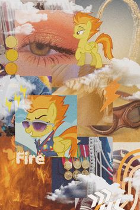
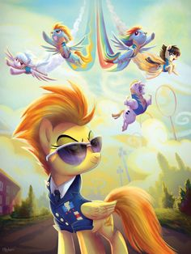
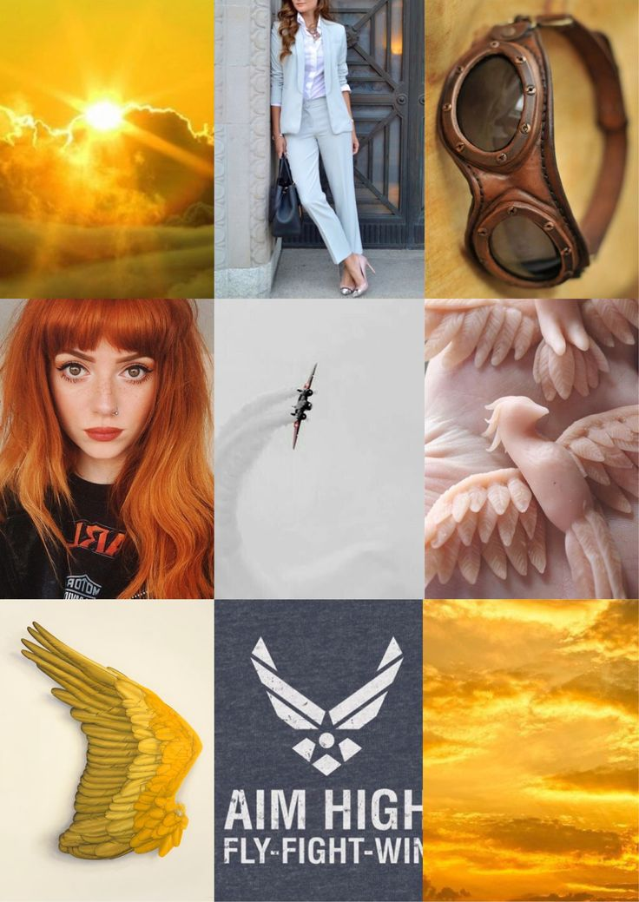

| Vorname: |
Spitfire |
| Nachname: |
-- |
| Geburtsort: |
-- |
| Wohnort: |
Cloudsdale |
| Spezies: |
Pegasus |
| Geschlecht: |
weiblich |
| Tätigkeit: |
Anführerin der Wonderbolts |
| sexualität: |
------- |
| Hobbys: |
 |
 |
 |
| Größe: |
110px breit & 225 px Hoch |
| Lieblingsfarbe: |
Gold-Gelb, Orange, Bernstein |
|
Eltern/Geschwister: |
Stormy Flare (Mutter)
|
|
Schönheitsfleck: |
|
| Über Spitfire: |
Spitfire ist ein Pegasus und Anführerin der Wonderbolts aus Rainbows großer Tag.
Spitfire ist eine erfahrene Fliegerin und als Anführerin der Wonderbolts die Nummer Eins in Equestria. Sie geht ihren Pflichten sorgfältig und professionell nach. Auch wenn ihr Rainbow Dash bereits das Leben gerettet hat, behandelt Spitfire sie nicht bevorzugt.
 |